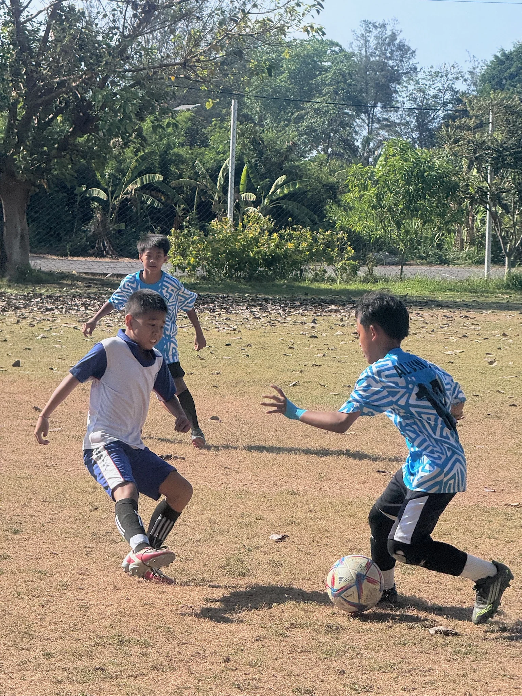
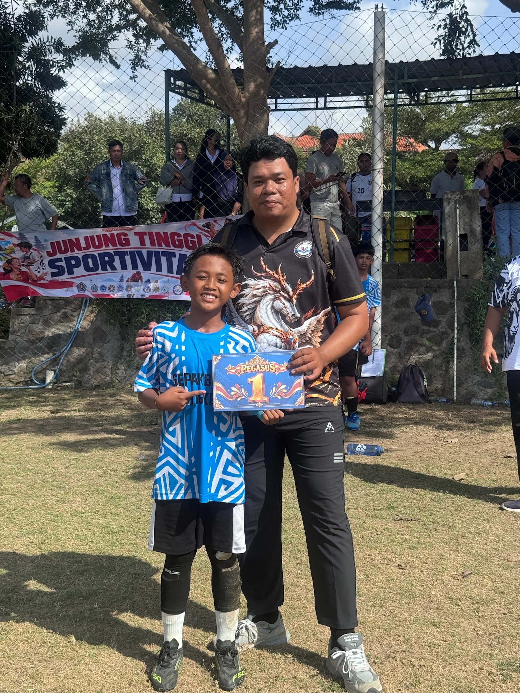
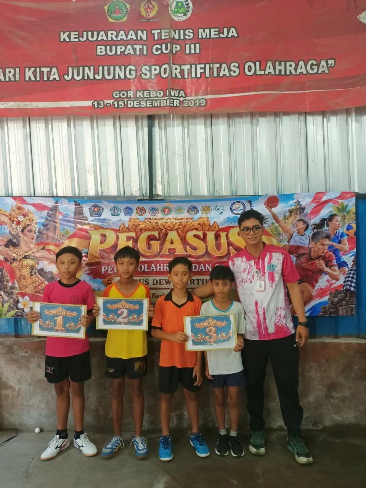
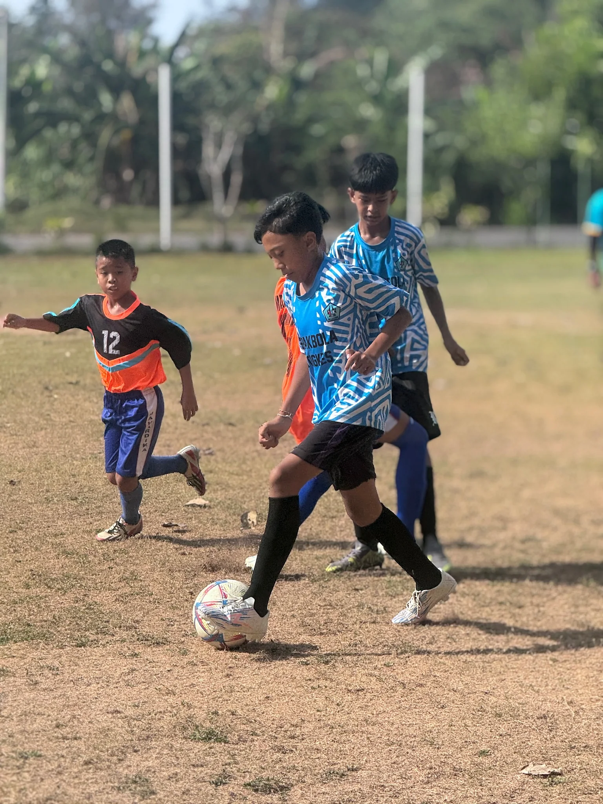
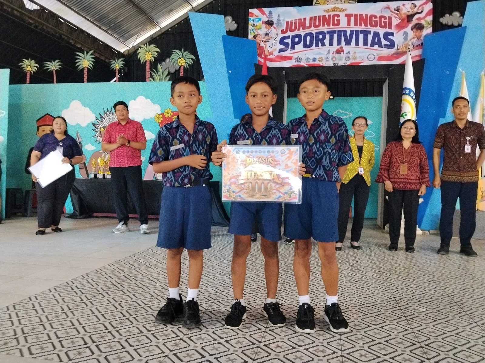

PEGASUS 2026 atau Pekan Olahraga dan Seni Gugus Dewi Sartika menjadi ajang bagi peserta didik dari delapan sekolah di lingkungan Gugus Dewi Sartika untuk mengembangkan bakat, menunjukkan kemampuan, serta mempererat persaudaraan melalui berbagai perlombaan di bidang olahraga dan seni.
Pada bidang olahraga, PEGASUS 2026 mempertandingkan 11 cabang olahraga. SD Negeri 3 Kesiman turut berpartisipasi dalam 5 cabang olahraga dengan mengirimkan kontingen yang terdiri atas 37 atlet. Beberapa peserta didik bahkan menunjukkan kemampuan dan semangatnya dengan mengikuti lebih dari satu cabang olahraga.
Melalui perjuangan, kerja sama, dan semangat sportivitas, kontingen SD Negeri 3 Kesiman berhasil meraih 2 medali emas, 1 medali perak, dan 1 medali perunggu, serta menempati peringkat ketujuh dalam klasemen akhir perolehan medali bidang olahraga PEGASUS 2026.


Dua Kemenangan Dramatis Warnai Perjalanan Kontingen
Salah satu momen paling berkesan datang dari cabang tenis meja tunggal putra. I Komang Agus Wirya Dharma menunjukkan mental bertanding yang luar biasa ketika harus menghadapi situasi sulit setelah tertinggal dua set dengan skor 0–2.
Alih-alih menyerah, Agus tetap tenang dan berusaha membalikkan keadaan. Melalui perjuangan yang penuh ketegangan, ia berhasil bangkit dari ketertinggalan dan memastikan kemenangan hingga meraih medali emas cabang tenis meja tunggal putra.

Kisah perjuangan Agus tidak berhenti di meja pertandingan. Ia juga menjadi bagian dari tim sepak bola SD Negeri 3 Kesiman yang berhasil meraih gelar juara pertama.
Dalam pertandingan final yang berlangsung sengit menghadapi SD Mahardika Denpasar, tim sepak bola SD Negeri 3 Kesiman menunjukkan kerja sama dan semangat juang yang tinggi. Ketika pertandingan memasuki menit-menit akhir, I Komang Agus Wirya Dharma berhasil mencetak gol penentu kemenangan yang mengantarkan timnya meraih gelar juara.

Gol tersebut menjadi momen yang membanggakan bagi seluruh anggota tim dan pendukung sekolah. Kerja sama, kekompakan, dan semangat pantang menyerah para pemain akhirnya membuahkan hasil berupa medali emas cabang sepak bola. Dalam satu penyelenggaraan PEGASUS, Agus berhasil mempersembahkan dua medali emas dari dua cabang olahraga berbeda.
Prestasi dari Cabang Olahraga Lainnya
Pada cabang karate, Ni Made Ayudia Sri Sadani yang tampil pada nomor kumite -29 kg berhasil menyumbangkan medali perak bagi sekolah. Prestasi tersebut menjadi hasil dari keberanian, kedisiplinan, dan semangatnya dalam menghadapi persaingan di arena pertandingan.
Sementara itu, tim E-Sport Free Fire SD Negeri 3 Kesiman menunjukkan kemampuan dalam menyusun strategi, menjaga komunikasi, dan membangun kekompakan tim hingga berhasil meraih juara ketiga dan menyumbangkan medali perunggu.

Berbagai pencapaian tersebut menjadi bukti bahwa potensi peserta didik SD Negeri 3 Kesiman berkembang dalam beragam bidang olahraga. Keberhasilan lahir dari keterampilan individu, kerja sama, kedisiplinan, dan kemauan untuk terus belajar.
Lebih dari Sekadar Medali
Kepala SD Negeri 3 Kesiman, Desak Nyoman Sari, memberikan apresiasi atas semangat dan perjuangan seluruh peserta didik yang telah mewakili sekolah dalam ajang PEGASUS 2026.
Keikutsertaan dalam kompetisi ini tidak semata-mata diukur dari jumlah medali atau peringkat yang diperoleh. Setiap pertandingan menjadi kesempatan bagi peserta didik untuk belajar menghadapi tantangan, membangun rasa percaya diri, menjunjung tinggi sportivitas, serta menghargai proses dan perjuangan.
Prestasi yang diraih menjadi kebanggaan bersama sekaligus motivasi untuk terus berkembang. Pengalaman para atlet yang belum berhasil meraih medali juga memiliki nilai yang tidak kalah penting. Keberanian untuk tampil, berusaha maksimal, dan menerima hasil pertandingan dengan sikap positif merupakan bagian dari pembentukan karakter peserta didik.
Sekolah menyampaikan terima kasih kepada para guru pendamping, orang tua, pelatih, dan seluruh pihak yang telah memberikan dukungan kepada kontingen SD Negeri 3 Kesiman, mulai dari persiapan hingga berakhirnya pertandingan.
Terus Berkembang dan Berprestasi
Partisipasi SD Negeri 3 Kesiman dalam PEGASUS 2026 menjadi pengalaman berharga sekaligus bahan evaluasi untuk meningkatkan pembinaan bakat dan minat peserta didik pada masa mendatang.
Melalui kegiatan seperti PEGASUS, sekolah berharap semakin banyak peserta didik yang berani menggali potensi, mengembangkan kemampuan, serta menunjukkan prestasi, baik dalam bidang olahraga maupun seni.
“PEGASUS 2026 bukan hanya tentang siapa yang menjadi juara, tetapi juga tentang keberanian untuk bertanding, semangat untuk terus berjuang, dan kebersamaan yang terbangun sepanjang kompetisi.”
Dengan semangat sportivitas dan kebersamaan, SD Negeri 3 Kesiman berkomitmen untuk terus menghadirkan lingkungan pendidikan yang mendukung perkembangan potensi peserta didik agar tumbuh menjadi generasi yang berprestasi, berkarakter, percaya diri, dan pantang menyerah.